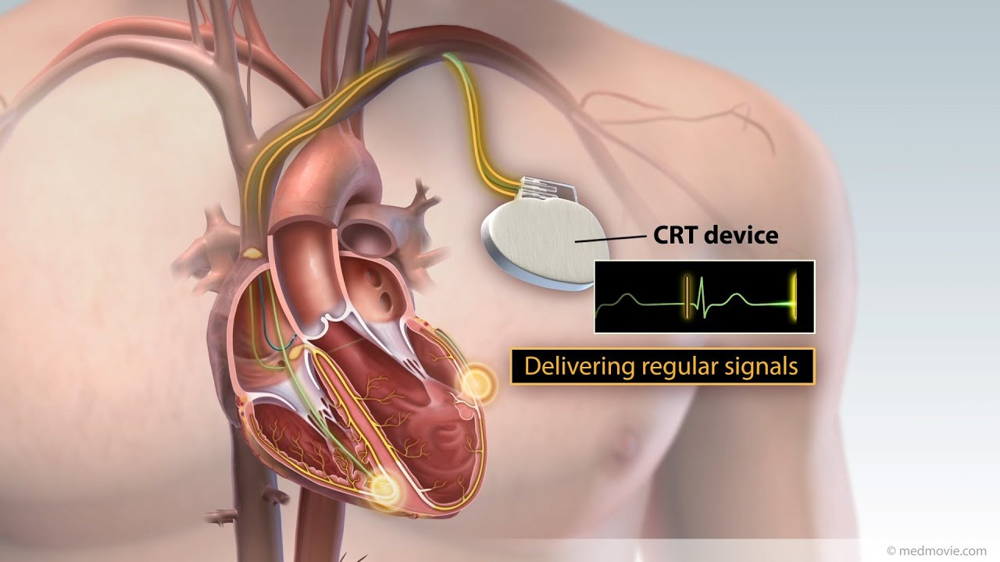

Post-TAVR Cardiac Monitoring
Post-TAVR Cardiac Monitoring
Post-TAVR cardiac monitoring supports rhythm surveillance after transcatheter aortic valve replacement when the treating team determines that ambulatory monitoring is appropriate. The goal is to extend observation beyond the hospital stay and provide organized rhythm information to the treating physician during the prescribed post-discharge period. Specialized Medical can support live mobile cardiac telemetry and practice-specific workflows for post-TAVR patients.
Why Rhythm Surveillance May Continue After TAVR
Conduction disturbances and arrhythmias may occur after TAVR, and clinical teams may prescribe ambulatory monitoring based on the patient’s procedural findings, ECG changes, symptoms, risk factors, and institutional protocol. Specific incidence rates, guideline classes, and timing recommendations are not published here; monitoring decisions rest with the treating team.
A Practical Post-Discharge Monitoring Workflow
- Patient identifiedBefore discharge, per program protocol
- Device appliedPatient trained before leaving the hospital
- Monitoring beginsLIVE test-status visibility during the study
- Data transmittedWhen live monitoring is prescribed
- Qualifying findings communicatedAccording to the configured protocol
- Final report deliveredFor physician review and interpretation
Programs may establish a pre-procedure or pre-discharge rhythm baseline when that is part of the program. Not every patient requires the same pathway — the treating team defines it. The underlying technology is described on the MCT and Live ECG Monitoring pages.
Physician-Defined Notification Criteria
The structural heart or cardiology team defines the communication criteria, contact hierarchy, after-hours pathway, and documentation expectations. Specialized Medical follows the configured protocol rather than using one universal threshold for every program.
Sample notification protocol template (non-clinical illustration)
Supporting the Patient at Home
Post-discharge patients need simple instructions: keep the phone charged and nearby, maintain electrode contact, record symptoms, answer monitoring calls, and seek emergency care for urgent symptoms.
Caregiver / patient checklist (review before discharge)
- Phone charged, powered on, and kept near the patient
- Electrode contact checked per instructions
- Symptom recording method understood
- Support number saved and monitoring calls answered
- Emergency plan understood: call 911 for urgent symptoms
Emergency symptoms
Patients with chest pain, severe shortness of breath, fainting, stroke symptoms, or other urgent symptoms should follow their physician’s instructions and seek emergency assistance — call 911 — rather than waiting for a monitoring call.
Program Reporting and Quality Improvement
Reports can support physician review and internal program evaluation. Potential program metrics may include enrollment completion, wear duration, transmission continuity, notification documentation, final-report turnaround, and follow-up completion. Outcome improvements are not claimed unless measured and substantiated.

Frequently Asked Questions
It is ambulatory rhythm monitoring prescribed after transcatheter aortic valve replacement to extend rhythm surveillance beyond the hospital stay.
No. The treating team determines whether monitoring is appropriate based on the patient and the program protocol.
A physician may prescribe MCT or another ambulatory monitoring modality depending on the clinical objective.
The clinical team determines timing. Some programs initiate monitoring before or at discharge.
Communication follows the physician-defined notification criteria and contact protocol.
No. Patients with urgent symptoms should call 911 or follow the discharge team’s emergency instructions.
Yes. Caregivers can help keep the phone charged, maintain proximity, follow device-care instructions, and respond to support calls.
The prescribing team determines the duration based on the patient and program protocol.
The data are finalized and a report is prepared for physician review and interpretation.
The implementation can be configured around discharge, contact, notification, reporting, and follow-up responsibilities across the program.
Request a Post-TAVR Monitoring Workflow Review
Specialized Medical can review the practice’s current ambulatory cardiac monitoring workflow, explain the available service options, and demonstrate how enrollment, monitoring, reporting, and physician review can be configured.
Prefer to talk? Speak With a Cardiac Monitoring Specialist — 1-855-SPEC-MED (1-855-773-2633)
Specialized Medical provides diagnostic ambulatory monitoring. The system is not a replacement for emergency medical services. Patients with urgent symptoms should call 911 or follow emergency instructions rather than waiting for a monitoring call.
Related Cardiac Monitoring Resources
Diagnostic Service Disclaimer: Specialized Medical provides ambulatory cardiac monitoring services and diagnostic information for review by qualified healthcare providers. The service does not replace physician judgment, emergency medical services, or instructions to call 911 when urgent symptoms occur.